I am an Assistant Professor in SUAT (深圳理工大学) in Shenzhen, China.
I got my bachelor in computer science from ECUST, master in pure math from Peking Univeristy, PhD in computer science from McGill Univeristy, Postdoc in University of Montreal and Concordia Univeristy.
I was fortunately mentored by Jinpeng An,
Hamed Hatami,
Pierre McKenzie,
Denis Pankratov and
Lata Narayanan.
Email: liyaqiao@suat-sz.edu.cn
Research interest: my research belongs theoretical computer science(aka., theory of computing). I guess my interest may be summarized as: with limited space, time, or information, what computations are possible? I'm also always interested in related mathematics.
Selected publication
Joan Boyar,
Shahin Kamali,
Kim S. Larsen,
Ali Mohammad Lavasani, Yaqiao Li,
Denis Pankratov,
On the Online Weighted Non-Crossing Matching Problem,
Information and Computation (2026),
arXiv:2603.09262.
click for a Summary:
Matching is a common task in nature, society, and mathematics. Avoiding crossing (of matching lines/curves) is a desired sometimes indispensable condition, such as for circuit design and understanding RNA structures, etc.
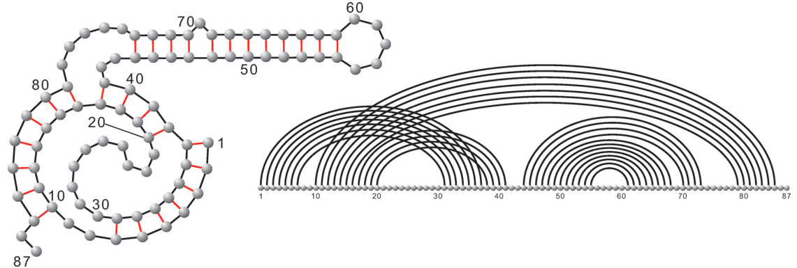
Fig a: A picture showing how RNA is related to k-noncrossing matching from
this paper.
This paper introduced the online and weighted version of the non-crossing matching problem, and gave optimal or competitive online algorithms and lower bounds in various models. In particular, we found a beautiful 1/3-competitive randomized algorithm, which uses a binary tree to guide its matching decisions.
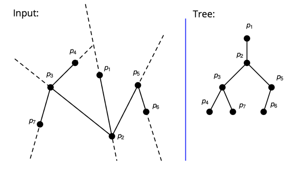
Fig b: A figure illustrating a conceptually simple(!) randomized algorithm in our paper.
Yaqiao Li,
Undecidability of polynomial inequalities in subset densities and additive energies,
COCOON 2025,
arXiv:2505.07378.
click for a Summary:
Many results in extremal graph theory can be formulated as certain polynomial inequalities in graph homomorphism densities. Answering fundamental questions raised by Lov{á}sz, Szegedy and Razborov, Hatami and Norine proved that determining the validity of an arbitrary such polynomial inequality in graph homomorphism densities is undecidable. We observe that many results in additive combinatorics can also be formulated as polynomial inequalities in subset's density and its variants. Based on techniques introduced in Hatami and Norine, together with algebraic and graph construction and Fourier analysis, we prove similarly two theorems of undecidability, thus showing that establishing such polynomial inequalities in additive combinatorics are inherently difficult in their full generality.
Yaqiao Li, Pierre McKenzie,
Perspective on complexity measures targeting read-once branching programs,
Information and Computation (2024),
arXiv:2305.11276.
click for a Summary:
Branching program (aka, binary decision diagram) is a more flexible counterpart of decision tree that represents/computes Boolean functions. It is: (i) a basic model for studying computational space, (ii) closely related to pseudorandomness, (iii) a fundamental data structure, (iv) useful to synthesize circuits and in formal verification, etc.
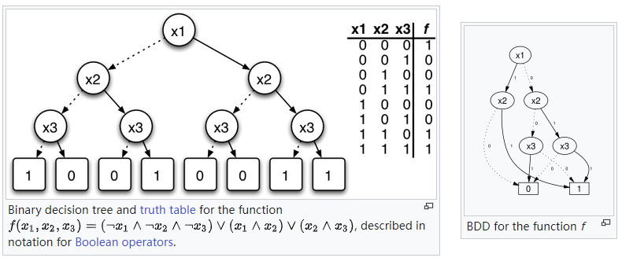
Fig a: A decision tree (left) and a branching program (right). Picture from wikipedia.
This paper studied the minimum size of read-once branching programs from the perspective of proposing lower bound complexity measures, and demonstrated their strengths as well as limitations, such as on the Tseitin formula (which is applicable in proof complexity), and on the Tree Evaluation Problem (which is studied for understanding a fundamental open problem in complexity: Logspace vs Polytime), etc. We also derive an exponential lower bound for non-deterministic read-k branching programs for the P-complete GEN function.
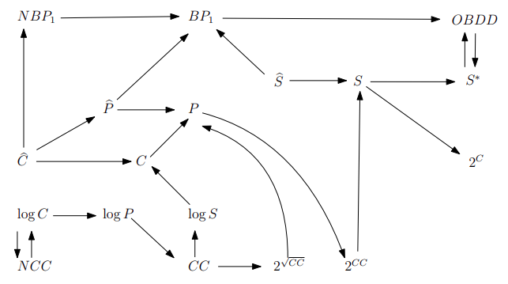
Fig b: A figure in our paper comparing different complexity measures.
Yaqiao Li,
Denis Pankratov,
Online Vector Bin Packing and Hypergraph Coloring Illuminated: Simpler Proofs and New Connections,
LAGOS 2023,
arXiv:2306.11241.
click for a Summary:
Bin packing is a classical NP-complete optimizaiton problem that is also of practical importance such as in loading cargo for shipping, creating file backups in media, etc.
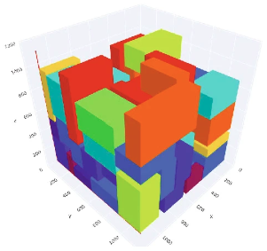
Fig a: Illustration of 3-dimensional bin packing. Figure from the paper `Hybrid approach for solving real-world bin packing problem instances using quantum annealers' by Romero et. al.
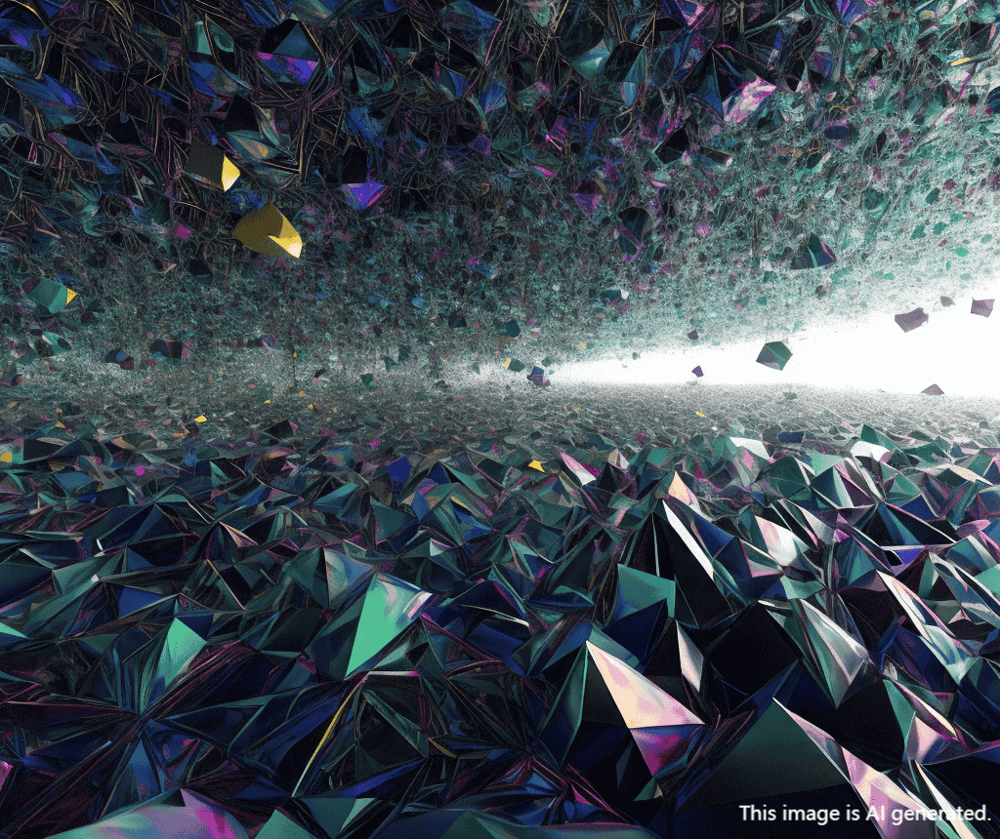
Fig b: A picture of high dimensional bin packing in AI's mind (AI generated image, credit to tongyi[通义]).
This paper introduced the online incidence matrix associated with the online hypergraph, which naturally led to a simple reduction from online hypergraph coloring to online vector bin packing, thus simplified a previous breakthrough by Azar et. al.. This paper also showed a 'diverse' multi-family has an interesting intersecting property, thus resolved a conjecture on online hypergraph coloring by Nagy-György and Imreh.
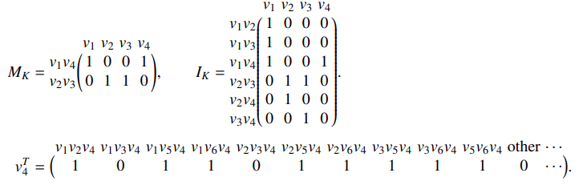
Fig c: Illustration of the online incidence matrix that we defined in this work.
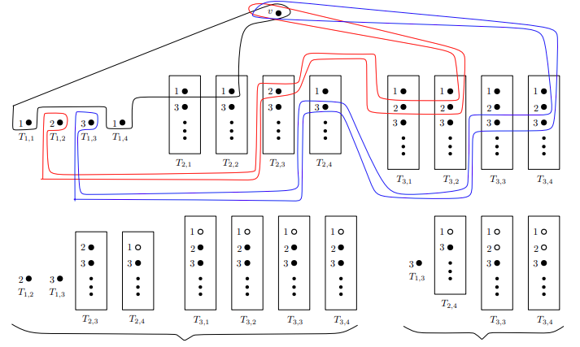
Fig d: Illustration of proving a conjecture on online hypergraph coloring by Nagy-György and Imreh.
Yaqiao Li,
Trading information complexity for error II: the case of a large error and external information complexity,
Information and Computation (2022),
arXiv:1809.10219.
click for a Summary:
Information complexity, incorporating Shannon's information theory into communication models, is a continuous version of communication complexity. Initially, it was used to help study communication complexity, and later found many other applications such as in optimization and in circuit complexity, etc.
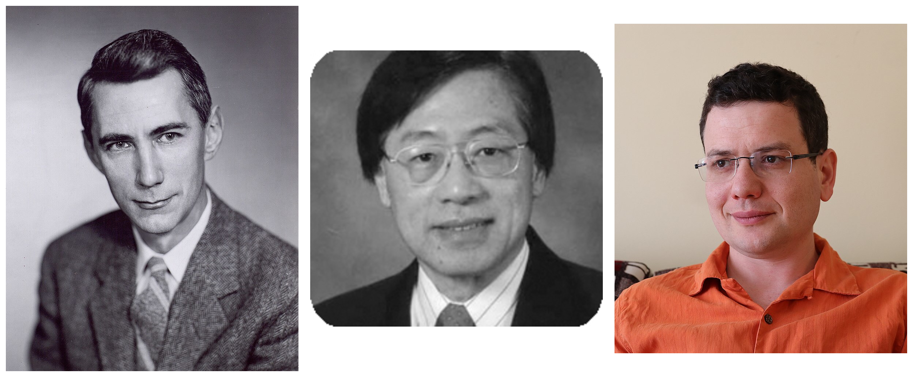
Fig a: Shannon, Yao, Braverman. Photo from wikipedia and amturing.acm.org.
This paper, as the 2nd part, completed the basic theory of the dependency of information complexity on the error allowed in computation. This in particular led to an an accurate formula of error-allowed information complexity of XOR function for a special distribution.
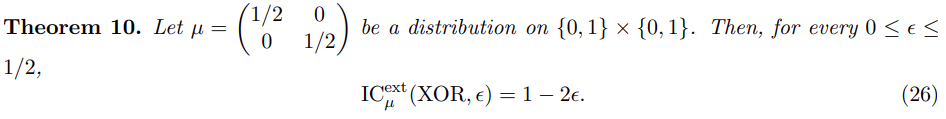
Fig b: An equality for information complexity of XOR function.
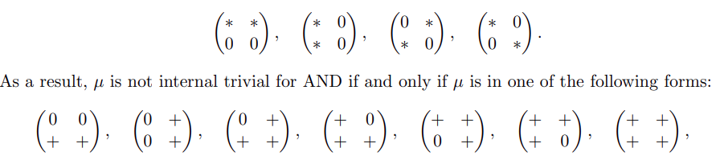
Fig c: A snapshot of analysis of information complexity of AND function.
2026: Discrete Math (undergrad), SUAT, 2026/09 to 2026/12.
2026: Discrete Math II (undergrad), Theory of Computation (grad), SUAT, 2026/03 to 2026/06.
2025: Discrete Math I (undergrad), Advanced Algorithms (grad), SUAT, 2025/09 to 2026/01.
2018: COMP/MATH 552 Combinatorial Optimization (grad+undergrad), McGill, 2018/01 to 2018/04.
2011-2019: Teaching Assistant and Tutorial (at PKU and McGill) for courses: Linear Algebra, Advanced Algebra, Lie Groups and Their Representations, Theory of Computation, Advanced Theory of Computation, Algorithm Design.
PhD students
朱玉（2026）
叶欣雨（2026）
Master students
吴世隆（2025）
Bachelor students
林峻逸，许粤川（2026）
王子轩（2025）
Visiting students
朱玉（2025.8-2026.1，Bachelor student in math at SUSTech）
戴越（2025.8，2026.8，PhD student in math at Moscow State University）
Work
Assistant Professor, Faculty of Comp. Sci. and AI, SUAT, 2024/5 to now.
Postdoc researcher, Department of Com. Sci. and Soft. Eng., Concordia, 2023/01 to 2024/01. Advised by professor Denis Pankratov and professor Lata Narayanan.
Senior Lecturer, Department of Electronic and Computer Engineering, SMBU, 2021/10 to 2022/09.
Postdoc researcher, Department of Computer Science, UdeM, 2019/11 to 2021/07. Advised by professor Pierre McKenzie.